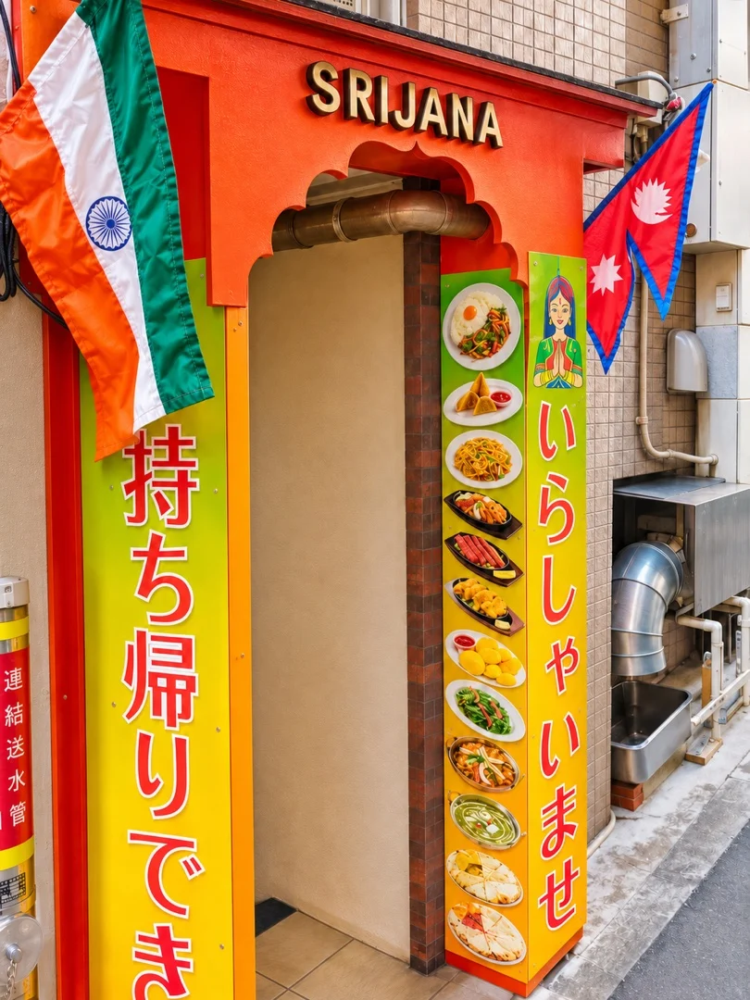
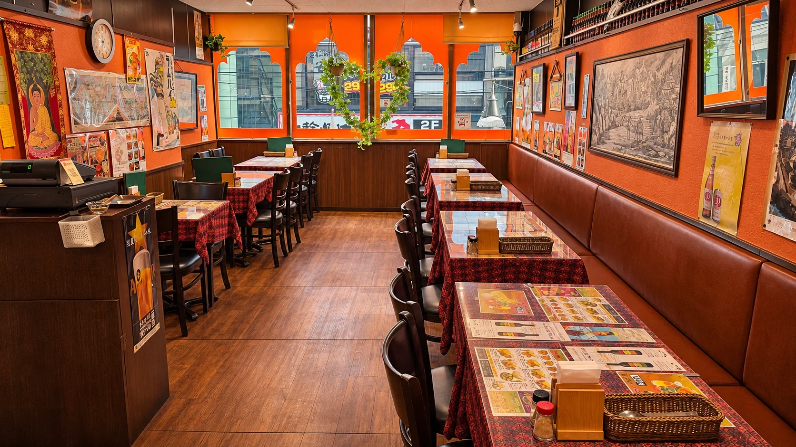
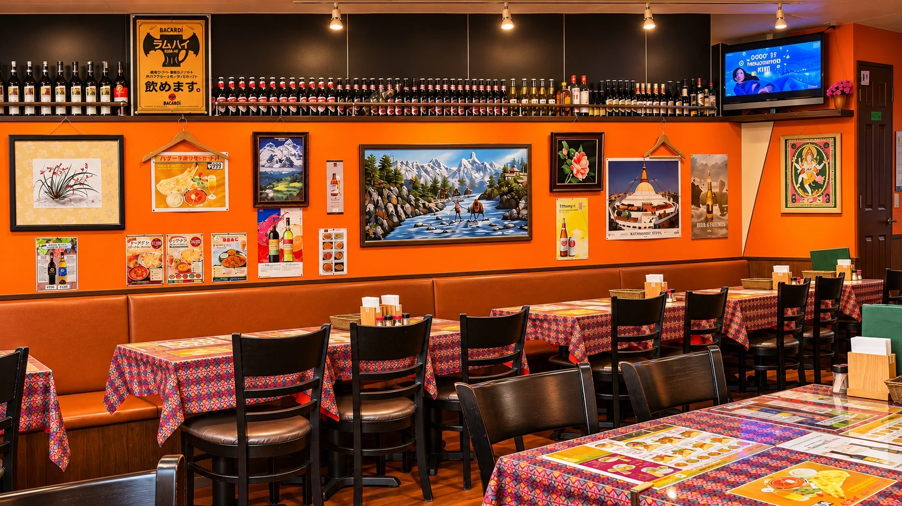
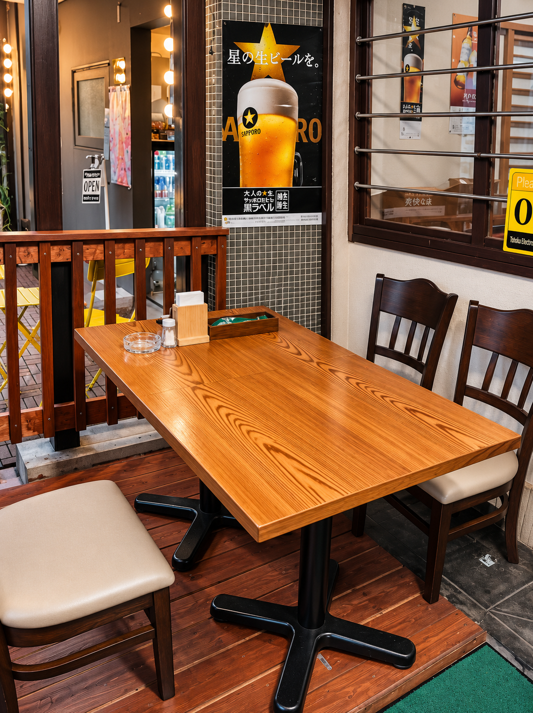
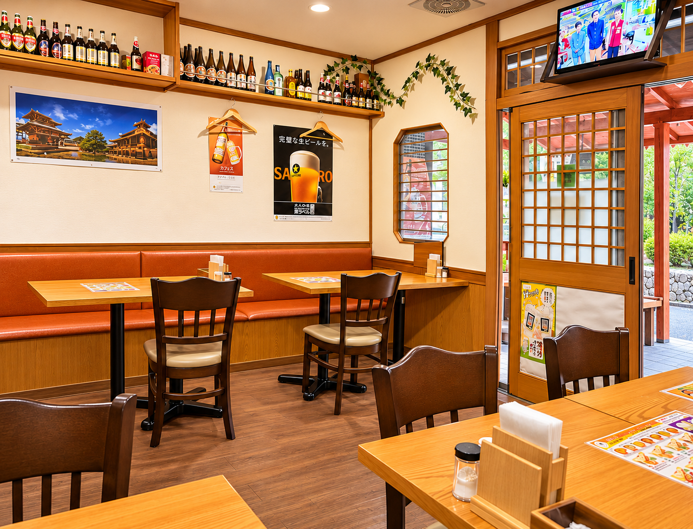
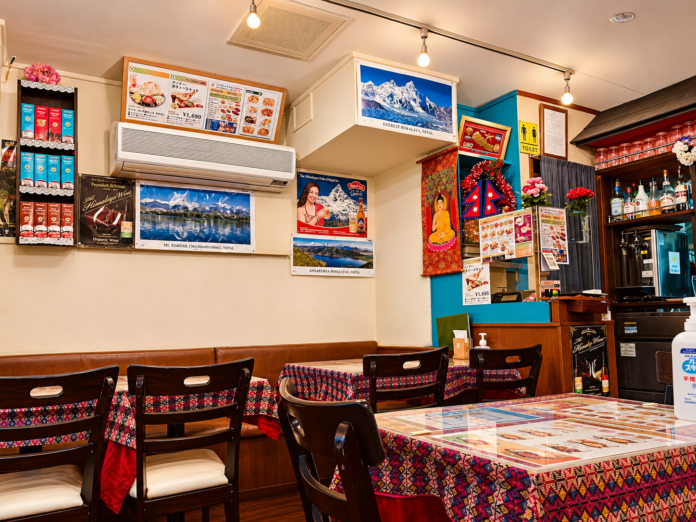
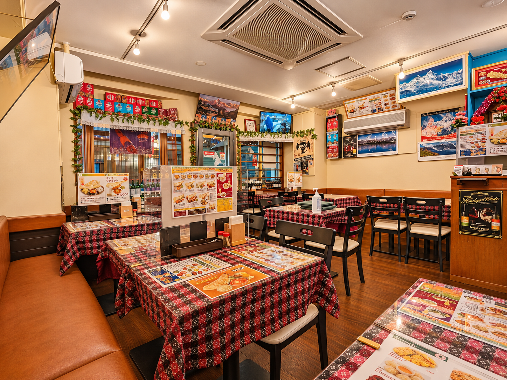

目白店
インドアジアンキッチン
シリジャナ 目白店



山の壁画と、
カレーを囲む食卓。
目白駅近くにあるシリジャナ目白店。山並みや田園風景の壁画に囲まれた赤いベンチ席で、ゆっくりお食事をお楽しみいただけます。
ランチにはカレーとチーズナンのセットを。夕食にはタンドリーチキンやシークカバブを、ご友人と分け合うのもおすすめです。

目白店

目白駅近くにあるシリジャナ目白店。山並みや田園風景の壁画に囲まれた赤いベンチ席で、ゆっくりお食事をお楽しみいただけます。
ランチにはカレーとチーズナンのセットを。夕食にはタンドリーチキンやシークカバブを、ご友人と分け合うのもおすすめです。
中村橋店


中村橋駅近くの店内では、アーチ形の窓とオレンジ色の壁に並ぶ絵が目を引きます。窓辺のテーブル席は、お昼のひと休みにもぴったりです。
タンドリーチキンやチキンビリヤニのほか、ベトナムの鶏肉入りフォーも。カレーとナンのランチから、いろいろな料理を分け合う夕食まで楽しめます。
大泉学園店



西武バス「都民農園」バス停からお越しいただける大泉学園店。木の建具や赤いベンチ席が、あたたかく落ち着いた雰囲気をつくります。
お昼のカレーとナンから、ご家族やご友人と囲む夕食まで。木のぬくもりに包まれた店内で、お好きな料理をゆっくりお楽しみください。
月〜金 11:00–15:00
17:00–22:30
土・日 11:00–22:30
なし
〒178-0061 東京都練馬区大泉学園町6-28-2 ラパ6号室
祝日の営業時間は店舗へお電話でご確認ください。
リアル 石神井公園店



石神井公園駅からほど近いリアル。オレンジ色のひさしの奥には、ヒマラヤの写真や柄のテーブルクロスが彩る明るいダイニングが広がります。
インドカレーやナンはもちろん、ネパールやアジアの料理も。お食事にも、一杯とともに楽しむ夕食にも、気軽にお立ち寄りください。
月〜金 11:00–15:00
17:00–23:00
土・日 11:00–16:00
17:00–23:00
なし
東京都練馬区石神井町3-19-12 大野壱番館1F
祝日の営業時間は店舗へお電話でご確認ください。